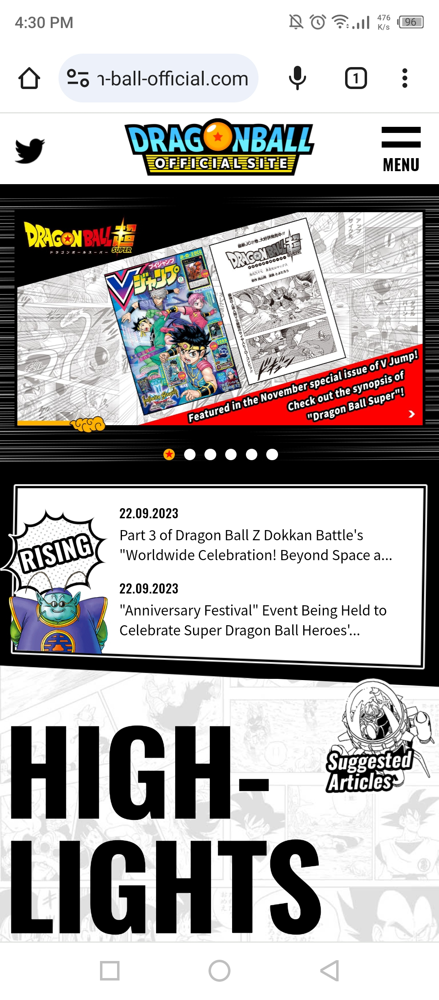
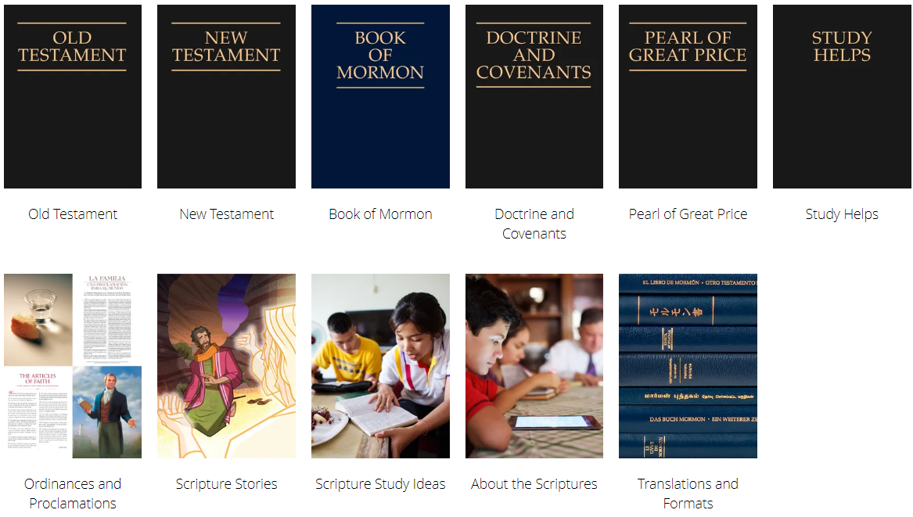

Repetition
Dragon Ball Official Site
https://en.dragon-ball-official.com This is the official site of Dragon Ball anime. A repetition, in Web Development is when you repeat some elements in a frame, div or section. In resume, repetition means reusing elements — colors, patterns, fonts, images, textures and more — throughout a piece of work
Alignment
Merriam-Webster Dictionary site
https://www.merriam-webster.comThis is the official Merriam-Webster dictionary site. In this image, it is clearly the principle of Alignment. But, what is Alignment? Well, alignment is when you put some elements in a row, can be in the vertical or horizontal. In this case, the elements are aligned both in the vertical and in the horizontal. In resume, Alignment is a design principle that refers lining up text or graphics on a page.
Proximity
Church of Jesus Christ website
https://www.churchofjesuschrist.org/study/scriptures?lang=eng&platform=web This is the official site of the Church of Jesus Christ of Latter-day Saints. In the picture above, we can see the principle of proximity. This principle relies on the fact of letting elements closer to each other. In resume, The principle of proximity states that items close together are likely to be perceived as part of the same group.